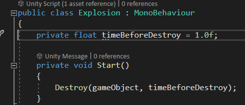

First Android Game - Part 6
July 9, 2023
This is part 6 of making my first Android Game. If you missed part5, you can find it here
Time to sync up the explosions on the player when the enemy collides with the player. I will use the same concept that I did for syncing the bullets. I remove ExplosionPoolInstance.cs. In Explosion.cs I removed all the code and kept only the Start() which will tell the Explosion gameobject when it should get destroyed after it is spawned

In Player.cs, in the Coroutine called HitByEnemyRoutine which is called by a PunRPC function called HitByEnemy. I would spawn the Explosions prefab
I disabled the cannons and big boss so I can test the game more easily with only the potatos enemies. The enemies are not synced up so the enemies spawn position in editor and mobile are different, this goes in my favor because I can see if the explosions are synced up properly. The example is showing the editor's point of view. The mobile player is moving, if the mobile player collides with the enemy in the editor view, no explosions occur. However, if the mobile player collides with an enemy in the mobile the explosions gets synced, even though in the editor view, no enemy has collided with the mobile player. This shows the player explosions are synced up
Next is to sync the explosions on the enemies. I first test on the potato enemies (not the cannon or bigboss yet). I place the potato enemies in Resources folder and attached a photonview component.
Instead of doing Instantiate, I do PhotonNetwork.Instantiate. This is so the PhotonView.IsMine can be true instead of false all the time.
 Following how I synced up explosions with the player, when enemy colliedes with the bullet, the PunRPC function gets called
Following how I synced up explosions with the player, when enemy colliedes with the bullet, the PunRPC function gets called
 The PunRPC will spawn the explosion at the location of the enemy
The PunRPC will spawn the explosion at the location of the enemy
 It did not work, and instead, I spawned double the amount of enemies because PhotonNetwork.Instantiate is called on host and client because of EnemyPoolInstance.cs
I decided to look at the Asteroid sample to see how they destroy asteroids when the spaceship's bullet collides with the asteroids. It turns out they approach it with DestroyGlobally if PhotonView.IsMine is true and DestroyLocally is PhotonView.IsMine is false
It did not work, and instead, I spawned double the amount of enemies because PhotonNetwork.Instantiate is called on host and client because of EnemyPoolInstance.cs
I decided to look at the Asteroid sample to see how they destroy asteroids when the spaceship's bullet collides with the asteroids. It turns out they approach it with DestroyGlobally if PhotonView.IsMine is true and DestroyLocally is PhotonView.IsMine is false
 DestroyGlobally() when call PhotonNetWork.Destroy(). While DestroyLocally() will disable the renderer
DestroyGlobally() when call PhotonNetWork.Destroy(). While DestroyLocally() will disable the renderer
 Recent blogs
See all blogs
Recent blogs
See all blogs